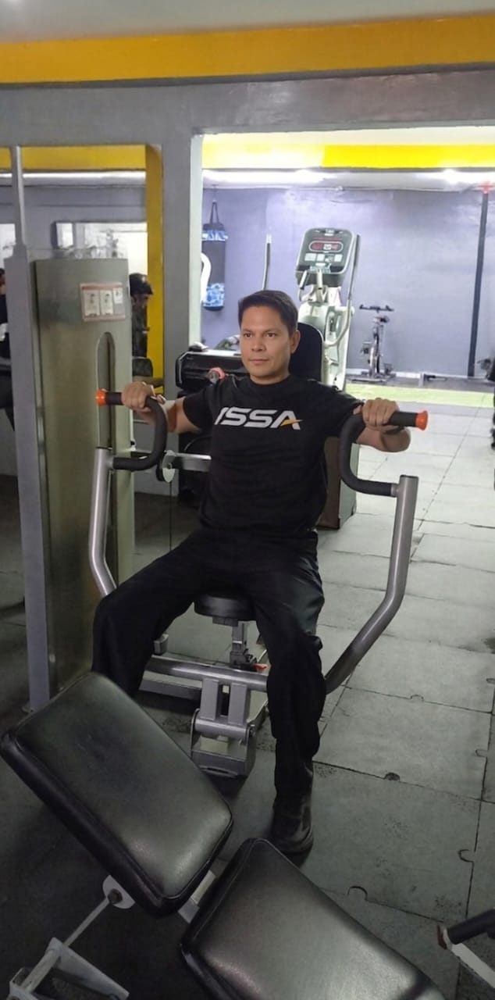

Evolución Física a través de la Ciencia y Biomecánica
18 años de experiencia. Sin rutinas genéricas, sin adivinanzas. Diagnóstico clínico-deportivo procesado con protocolos de Inteligencia Artificial.
SOLICITAR ENTREVISTA DE DIAGNÓSTICO
18 años de experiencia. Sin rutinas genéricas, sin adivinanzas. Diagnóstico clínico-deportivo procesado con protocolos de Inteligencia Artificial.
SOLICITAR ENTREVISTA DE DIAGNÓSTICO

Copiar tendencias de internet destruye articulaciones y estanca tu metabolismo. Tu estructura ósea, historial de lesiones y objetivos requieren una intervención clínica de precisión.
Aplicando el método de Entrevista Motivacional y Triaje Biomecánico, identificamos las palancas exactas de tu cuerpo. Esta data es procesada por mi consultor IA privado para estructurar un plan matemáticamente perfecto.

Ejecución técnica y consejos de optimización.
La evaluación y asignación de protocolos es 100% personalizada. Haz clic abajo para iniciar nuestra Entrevista Motivacional directa y confidencial.
INICIAR DIAGNÓSTICO VÍA WHATSAPP